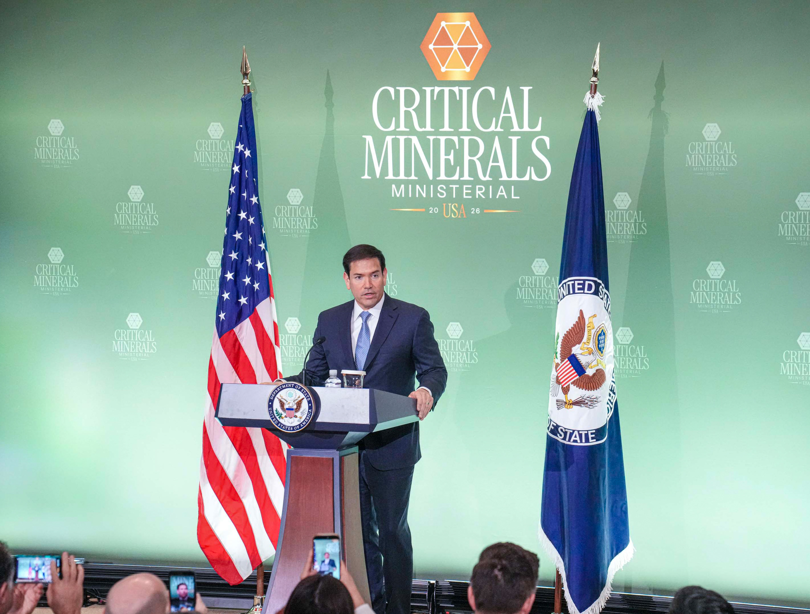

Le Club des Minéraux Critiques : Refuse le terrain qu’on te tend

Source : U.S. Department of State, « Secretary Rubio Holds Press Availability at Critical Minerals Ministerial », 4 février 2026 (domaine public, via Flickr).
LE FAIT BRUT
Le 4 février 2026, Washington tient le Critical Minerals Ministerial, en présence de plus de cinquante pays et d’organisations partenaires, pour bâtir un bloc minéral destiné à sécuriser l’accès aux minéraux critiques (cobalt, cuivre, lithium, nickel, terres rares) et à réduire la dépendance à la Chine.
Dans ce cadre, les États‑Unis annoncent de nouveaux engagements : 11 accords ou cadres bilatéraux signés pour soutenir la prospection, l’extraction, le raffinage et le recyclage, ainsi que des instruments visant à stabiliser le marché – mécanismes tarifaires, garanties publiques, coordination des politiques de stock.
En parallèle, la Banque d’Export‑Import américaine approuve Project Vault, une réserve stratégique de minéraux critiques dotée d’environ 10 milliards de dollars de financements publics, avec un objectif d’environ 12 milliards de dollars en combinant capitaux privés. Officiellement, il s’agit de « renforcer la résilience des chaînes d’approvisionnement » et de « favoriser le développement durable chez les partenaires ».
Ce sommet intervient alors que l’architecture de sécurité occidentale est en crise : l’OTAN est décrite comme en « état de mort cérébrale » ou comme un « tigre de papier », l’Europe se réarme dans l’urgence, les États‑Unis réclament jusqu’à 5 % du PIB de dépenses militaires et la cohésion politique se fissure. Les guerres d’intervention (Irak, Afghanistan, Libye) ont coûté des milliers de milliards de dollars sans produire d’ordres stables, poussant les grandes puissances à privilégier désormais les guerres de flux (sanctions, corridors, normes, blocs commerciaux) plutôt que les guerres de terrain.
L’Afrique se retrouve au centre de cette nouvelle architecture : les blocs occidentaux cherchent à sécuriser ses minéraux via un club, les anciennes garanties militaires sont fragilisées et la pression se déplace vers l’économie, le droit, la logistique et la norme.
LA LOI APPLICABLE : LOI 4 — NE COMBATS JAMAIS SUR UN TERRAIN QUE TU N’AS PAS CHOISI
Dans Les 50 Lois du Pouvoir Contemporain, la Loi 4 rappelle que toute bataille perdue commence sur un terrain imposé : accepter les règles, le tempo et l’arène définis par d’autres revient souvent à entériner sa propre défaite stratégique.
Appliquée au club des minéraux critiques, cette loi pose une question centrale à l’Afrique : veut‑elle se battre sur le terrain des sanctions, standards de compliance, prix‑planchers et corridors clés en main que les blocs lui proposent, ou préfèrera‑t‑elle déplacer la bataille vers des terrains qu’elle contrôle réellement ?
Le pouvoir ne consiste pas à gagner sur le terrain de l’autre, mais à forcer l’autre à traiter sur un terrain que tu as toi‑même dessiné.
LES TERRAINS QU’ON TE PROPOSE
1) Terrain sécuritaire : la dépendance comme héritage
Pendant des décennies, une partie de l’Europe a vécu sous une garantie de sécurité externalisée, au prix d’un sous‑investissement militaire et d’une dépendance industrielle profonde. Aujourd’hui, cette architecture se fissure : la garantie automatique de défense est publiquement mise en doute, les budgets militaires doivent exploser pour satisfaire les nouvelles exigences et chaque capitale redécouvre ses intérêts propres.
Pour l’Afrique, cela signifie deux choses : les Européens ont besoin de minéraux critiques pour leur réarmement et leurs industries d’armement, et les États‑Unis cherchent de nouveaux leviers de contrôle sur l’Europe et la Chine via les minéraux, l’IA, les semi‑conducteurs et les terres rares.
Le terrain sécuritaire qui se profile est piégé : d’un côté, on propose des arrangements militaires et de formation comme condition implicite d’accès aux clubs économiques ; de l’autre, tout manquement peut être « sanctionné » sur le terrain économique ou normatif. Dans tous les cas, le cadre reste calibré par d’autres.
2) Terrain normatif et financier : sanctions, compliance et moralisation asymétrique
Les sanctions contemporaines fonctionnent comme une architecture d’étranglement : interdiction de vendre, d’acheter, de transporter, de payer, sous prétexte de sécurité, de prolifération ou de droits humains. Elles frappent d’abord les sociétés, bien avant les régimes, et peuvent durer des décennies.
Transposé aux minéraux critiques, ce schéma permet de conditionner l’accès aux marchés à des standards ESG et de traçabilité écrits ailleurs, avec le risque de voir certains États africains classés « non coopératifs » et donc exclus de facto du jeu par la finance, l’assurance ou le droit commercial.
Le terrain proposé est clair : « Tu peux vendre tes minéraux si tu respectes nos standards, nos systèmes de traçabilité, nos audits, nos tribunaux, nos décisions politiques – sinon, tu sors du jeu. » La bataille n’est alors plus « qui est le plus vertueux », mais qui définit la vertu et qui contrôle les instruments de sa vérification.
3) Terrain logistique : corridors conçus ailleurs
Les détroits, ports et corridors sont devenus des leviers de puissance : celui qui peut les fermer, les réorienter ou les saturer influence l’économie mondiale sans tirer un seul coup de feu. En Afrique, des projets comme le Lobito Corridor (Angola–RDC–Zambie vers l’Atlantique) sont présentés comme des solutions de diversification logistique, soutenus par l’UE, les États‑Unis et plusieurs bailleurs.
La promesse est de réduire les temps de transit, de connecter la Copperbelt aux grands marchés et de favoriser la transformation locale, mais le risque structurel est de voir se constituer des goulots logistiques où contrats de transport, priorités de trafic et décisions stratégiques sont largement définis par des intérêts extérieurs.
Sur ce terrain, l’Afrique est invitée à négocier projet par projet, tronçon par tronçon, sans maîtriser la logique d’ensemble qui relie ces infrastructures entre elles.
LES TERRAINS QUE TU DOIS IMPOSER
1) Corridors africains : du projet au dispositif de souveraineté
Appliquer la Loi 4, c’est refuser de se battre sur le terrain de « qui finance le plus vite » ou de « qui offre le plus de dons » et imposer celui de la gouvernance des corridors : co‑propriété africaine des sociétés de gestion (rails, ports, pipelines) avec de vrais droits de veto, priorisation contractuelle de flux africains (agriculture, commerce intra‑africain, projets industriels) et exigence d’infrastructures de données souveraines sur les flux.
Terrain choisi : « Nous ne négocierons pas seulement un projet d’infrastructure, mais une architecture de corridors dont nous définissons la logique d’usage. »
2) Normes co‑écrites : de la compliance subie à la souveraineté normative partagée
Les marchés exigeront toujours davantage de traçabilité, de transparence ESG et de preuves de “responsible sourcing”. L’enjeu n’est pas de refuser ces exigences, mais de refuser qu’elles soient écrites sans l’Afrique.
Cela implique de créer des plateformes africaines de traçabilité et de certification gouvernées depuis le continent, d’inscrire l’Afrique comme co‑auteur des standards internationaux dans les forums ad hoc et de conditionner l’accès aux gisements à la reconnaissance mutuelle de ces systèmes comme équivalents aux systèmes occidentaux ou asiatiques.
La question devient alors : « Nos règles respectives sont‑elles reconnues comme condition d’accès à nos marchés respectifs ? » plutôt que « Sommes‑nous conformes aux vôtres ? ».
3) Réserves et prix : co‑architecte de la stabilité
Project Vault, avec ses 10–12 milliards de dollars, signale que la souveraineté passe désormais aussi par des stocks stratégiques et des mécanismes de prix, pas seulement par des alliances militaires.
Le terrain africain à construire suppose la mise en place de stockpiles régionaux de minéraux critiques (via banques régionales, fonds souverains, Afreximbank), la négociation de contrats intégrant des mécanismes de co‑gestion du prix (planchers, bandes de fluctuation, formules indexées) et la participation active aux instances du club qui définiront prix de référence et seuils d’intervention.
L’objectif est de passer du statut de « fournisseur exposé à la volatilité » à celui de co‑gardien de la stabilité d’un marché central pour la transition énergétique mondiale.
SIGNAUX IGNORÉS ET ANTILOI
- Signal #1 – L’héritage de la dépendance militaire : le continent européen découvre, après des décennies, le coût d’avoir laissé sa sécurité dépendre d’une architecture conçue ailleurs. Si l’Afrique laisse ses flux minéraux dépendre d’architectures externes (corridors, stockpiles, normes), elle reproduira la même trajectoire.
- Signal #2 – L’effet réel des sanctions : les sanctions prolongées étranglent d’abord les sociétés, pas les régimes, et servent souvent de prétexte à des « accords alibis » qui permettent à tous de sauver la face sans changer la structure. Attendre d’être sous sanction pour penser des alternatives logistiques, financières ou normatives serait une erreur stratégique majeure.
- Antiloi de la Loi 4 : « Celui qui accepte tous les terrains se condamne à perdre partout. » Accepter sans condition les cadres sécuritaires externes, les standards importés et les corridors conçus sans toi, c’est se battre dans des arènes où tu es structurellement désavantagé.
LE CHIFFRE QUI TUE
10 000 000 000
C’est la dotation initiale de Project Vault, la réserve stratégique américaine de minéraux critiques.
Ce chiffre révèle le vrai terrain que les États‑Unis ont choisi : déplacer une partie de leur puissance de l’OTAN vers des entrepôts, des contrats long terme et des algorithmes de prix, et investir dans la capacité de piloter des flux dont une partie majeure viendra du sous‑sol africain.
Tant que l’Afrique ne se dote pas, elle aussi, de mécanismes de stock, de régulation de prix et de gouvernance de corridors, elle ne choisira pas le terrain ; elle sera invitée à s’y adapter.
CHUTE
Le 4 février 2026, Washington n’a pas seulement organisé un sommet sur les minéraux critiques ; il a dessiné un terrain : celui d’un club où les règles, les prix, les corridors et les sanctions sont largement pensés par ceux qui veulent sécuriser leur transition et leurs industries.
La Loi 4 rappelle une chose simple : on ne gagne pas une guerre sur un champ de bataille que l’adversaire a dessiné pour soi. L’Afrique n’a pas besoin de refuser le club ; elle doit refuser d’y entrer comme simple fournisseur discipliné.
Les vraies batailles se joueront ailleurs : dans la conception de ses corridors, dans la co‑écriture de ses normes, dans la constitution de ses réserves et dans la capacité à dire, sans geste inutile : « Nous pouvons vivre sans votre club, mais vous ne pouvez pas stabiliser vos transitions sans nos flux. »
Le jour où ces terrains‑là seront imposés, le club des minéraux critiques cessera d’être une scène de domestication pour devenir ce qu’il devrait être : un espace de négociation entre architectes de souveraineté.
LIMITES DE L'ANALYSE
Dynamique encore fluide du club minéral. Le Critical Minerals Ministerial ouvre un chantier, il ne le clôt pas : gouvernance du bloc, clauses détaillées des 11 accords, articulation avec d’autres cadres (G7, G20, accords bilatéraux) restent en construction. Les scénarios présentés ici sont donc structurels, pas prédictifs point par point.
Project Vault : taille réelle vs effet symbolique. Les 10–12 milliards annoncés peuvent ne couvrir que quelques mois de consommation pour certains matériaux, et leur efficacité dépendra de la discipline politique américaine et des conditions de marché.
Hétérogénéité des cas africains. Tous les pays ne sont pas dans la même situation vis‑à‑vis des minéraux critiques : producteurs clés, corridors, États surtout concernés par les normes et la finance. Chaque gouvernement devra adapter ces principes à ses propres contraintes politiques, budgétaires et institutionnelles.
Incertitudes sur les réactions chinoises et européennes. La Chine peut riposter via ses propres contrôles d’exportation ou blocs Sud‑Sud, et l’Europe peut chercher à se repositionner avec ses propres réserves et cadres de standards.
Biais assumé : priorité à l’angle africain. La focale choisie est afro‑centrée : la question n’est pas « Project Vault est‑il optimal pour les États‑Unis ? », mais « Quels terrains l’Afrique doit‑elle refuser ou créer ? ».
Temporalité des flux vs cycles politiques. Les corridors, plateformes de données et stockpiles demandent 5 à 15 ans pour se matérialiser, alors que les cycles politiques sont plus courts, ce qui pose un problème de continuité stratégique.
Les données de cette analyse sont issues de sources publiques vérifiables (Département d’État américain, EXIM Bank, analyses spécialisées sur les minéraux critiques, travaux sur l’OTAN et les sanctions). Les interprétations, scénarios et recommandations n’engagent que leur auteur.